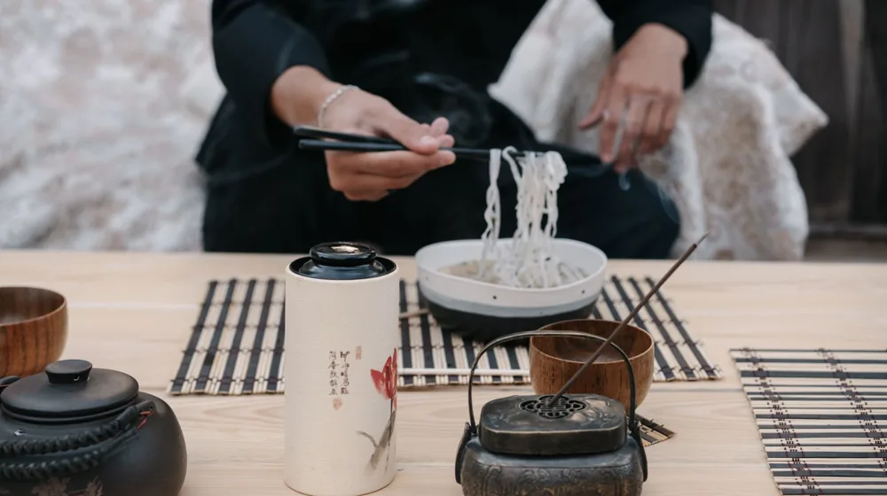

종가 프라이빗 다이닝, 어떻게 예약하고 준비할까? 놓치면 후회할 팁
사진: Luis Becerra Fotógrafo / Pexels (무료 이미지, 출처 표기)
특별한 미식 경험, 종가 프라이빗 다이닝의 매력

일상에서 벗어나 특별하고 품격 있는 미식 경험을 찾고 계신가요? 종가 프라이빗 다이닝은 단순히 한 끼 식사를 넘어, 한국의 전통과 역사가 깃든 공간에서 조상의 지혜가 담긴 음식을 맛보는 고유한 경험을 제공합니다.
종가(宗家)는 대대로 한 집안의 맏이로 이어 내려오는 계통을 의미하며, 그들의 음식을 맛보는 것은 단순한 미식 체험을 넘어 귀한 문화 유산을 접하는 기회입니다. 고즈넉한 한옥에서 종손, 종부가 직접 들려주는 이야기와 함께 정갈한 음식을 즐기며 오감을 만족시킬 수 있습니다.
종가 프라이빗 다이닝 체험, 어떻게 예약할까?
종가 프라이빗 다이닝은 일반 식당처럼 쉽게 예약하기 어려운 경우가 많습니다. 특별한 경험인 만큼 준비 과정 또한 다소 까다로울 수 있으니, 아래 안내를 참고하여 미리 계획을 세우는 것이 중요합니다.
- 정보 탐색: 문화재청, 한국관광공사, 지자체 문화재단 등의 공식 웹사이트에서 종가 다이닝 프로그램을 검색합니다. 일부 종가는 자체 웹사이트나 블로그를 운영하기도 합니다.
- 예약 채널 확인: 대개 전문 예약 플랫폼(네이버 예약, 특정 다이닝 전문 앱 등)이나 종가에 직접 문의하여 예약이 진행됩니다. 2026년 9월 기준으로, 인기 프로그램은 마감이 빠르니 희망 날짜를 정했다면 서둘러 확인하는 것이 좋습니다.
- 프로그램 선택: 종가마다 제공하는 메뉴, 스토리텔링, 체험 내용 등이 다릅니다. 방문 목적과 취향에 맞는 프로그램을 신중하게 선택하세요.
- 예약 신청 및 확정: 예약 가능 여부를 확인한 후 신청하고, 대기 기간을 거쳐 확정되면 결제를 진행합니다. 취소 및 환불 규정을 미리 숙지하는 것이 중요합니다.
정확한 예약 가능 여부와 절차는 각 종가 또는 예약 플랫폼의 공식 안내를 다시 확인하시길 권장합니다.
성공적인 체험을 위한 필수 준비물 체크리스트
종가 프라이빗 다이닝을 더욱 완벽하게 즐기기 위해서는 몇 가지 준비물이 필요합니다. 아래 체크리스트를 참고하여 잊지 말고 챙기세요.
- 단정한 복장: 종가의 고풍스러운 분위기에 어울리는 단정하고 편안한 복장이 좋습니다. 한복이나 세미 정장 차림을 권장하며, 지나치게 화려하거나 캐주얼한 복장은 지양하는 것이 좋습니다.
- 개인 위생용품: 필요한 경우 소독젤, 마스크 등 개인 위생용품을 챙겨가는 것이 좋습니다.
- 카메라 또는 스마트폰: 아름다운 한옥 풍경과 정갈한 음식을 사진으로 담고 싶을 때 유용합니다. 단, 플래시 사용은 다른 손님이나 종가에 방해가 될 수 있으니 자제해야 합니다.
- 메모 도구: 종손, 종부가 들려주는 음식 이야기나 종가의 역사 등 흥미로운 설명을 기록하고, 궁금한 점을 질문하기 위한 메모지나 펜을 준비해 보세요.
- 결제 수단: 예약 시 결제는 완료되었더라도, 혹시 모를 추가 이용이나 기념품 구매를 위해 결제 수단을 지참합니다.
종가 프라이빗 다이닝, 이런 점은 주의하세요
특별한 경험을 위해 방문하는 곳인 만큼, 종가 다이닝만의 에티켓을 지키는 것이 중요합니다. 다른 방문객과 종가에 대한 예의를 보여주세요.
- 시간 엄수: 종가 프라이빗 다이닝은 정해진 시간에 맞춰 프로그램이 진행됩니다. 지각은 다른 손님들에게 불편을 줄 수 있으므로, 약속된 시간보다 10~15분 일찍 도착하는 것이 좋습니다.
- 조용한 분위기 유지: 고즈넉한 종가의 분위기를 해치지 않도록 큰 소리로 대화하거나 소란스러운 행동은 삼가주세요.
- 촬영 예절: 사진 촬영 시 플래시 사용을 자제하고, 다른 사람의 초상권이나 종가의 사적 공간을 침해하지 않도록 주의합니다. 촬영 금지 구역에서는 촬영하지 않습니다.
- 음식 알레르기 및 식단: 특정 음식 알레르기가 있거나 특별한 식단 제한이 있다면, 반드시 예약 시 미리 종가 측에 알려야 합니다. 당일 요청 시 반영이 어려울 수 있습니다.
- 취소 및 환불 규정 확인: 갑작스러운 일정 변경에 대비하여 예약 전 취소 및 환불 규정을 꼼꼼히 확인하고 동의한 후 예약하시기 바랍니다.
궁금증 해소! 종가 프라이빗 다이닝 자주 묻는 질문
종가 프라이빗 다이닝 체험을 앞두고 많은 분들이 궁금해하는 질문들을 모아봤습니다.
Q. 혼자 방문해도 되나요?
A. 일부 종가 프로그램은 1인 방문객을 위한 코스를 운영하기도 합니다. 하지만 대부분의 종가 다이닝은 최소 인원 제한이 있는 경우가 많으니, 예약 시 반드시 확인이 필요합니다.
Q. 주차가 가능한가요?
A. 종가는 대부분 오래된 건축물이며 도심 외곽에 위치한 경우가 많아 주차 공간이 충분하지 않을 수 있습니다. 예약 시 주차 가능 여부와 주변 주차 시설을 미리 문의하는 것이 좋습니다.
Q. 메뉴 변경이나 추가 주문이 가능한가요?
A. 종가 프라이빗 다이닝은 대부분 정해진 코스 메뉴로 운영됩니다. 알레르기 등 특별한 경우가 아니라면 메뉴 변경은 어렵거나 제한적입니다. 추가 주문 가능한 품목이 있을 수 있으나, 사전에 확인하는 것이 좋습니다.
Q. 어린아이와 함께 방문해도 될까요?
A. 종가 다이닝은 조용하고 예의를 갖춰야 하는 분위기인 경우가 많아, 어린아이 동반 시 제한이 있을 수 있습니다. 예약 전 종가에 아이 동반 가능 여부를 확인하고, 아이들이 다른 손님에게 방해되지 않도록 교육하는 것이 중요합니다.
🔗 이 글도 함께 보면 좋아요: 혼자 떠나는 여행, 놓치면 후회할 준비물 7가지와 안전 팁!
관련 추천 상품
이 포스팅은 쿠팡 파트너스 활동의 일환으로, 이에 따른 일정액의 수수료를 제공받습니다.